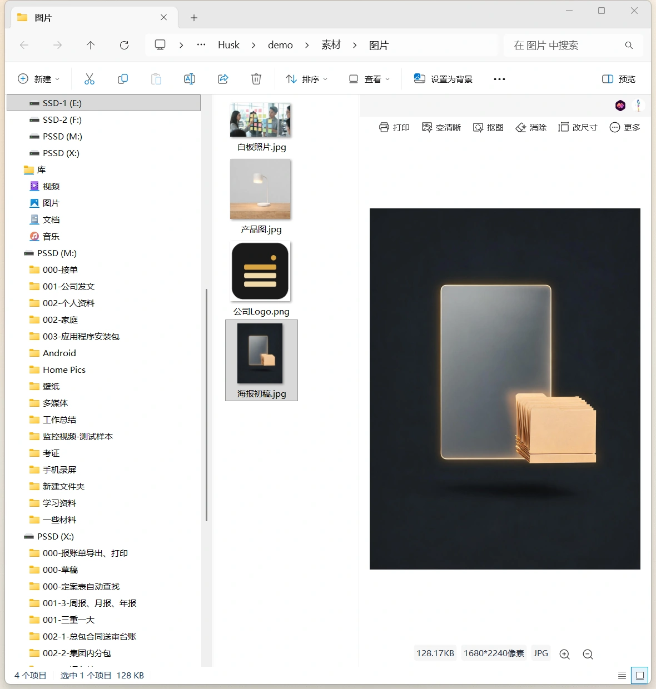
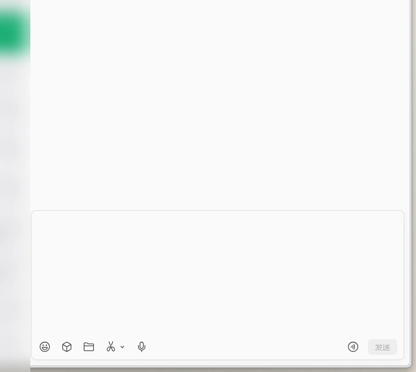
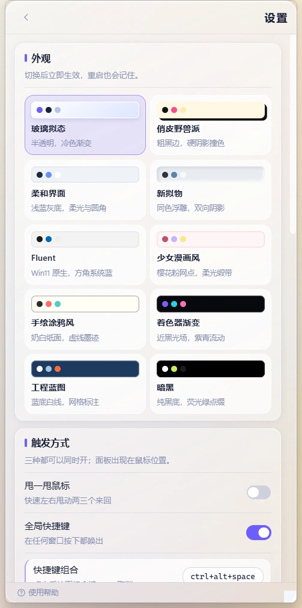

下载目录是一条倒序流水
表格、图片、安装包全按时间堆在同一个列表里，名字还常常只差一个日期。
日常
常用的文件和链接，散在下载目录、桌面、聊天记录和三四层深的文件夹里。 真要用的那一刻，得从这些地方一路翻过去，时间花在找，而不是用。
表格、图片、安装包全按时间堆在同一个列表里，名字还常常只差一个日期。
常用的几份摊在桌面，一开窗口就压在下面，只能先最小化窗口再翻找。
上周发过的地址，要往上翻两屏才见得到；翻到了，还得再复制一次。
项目 / 客户 / 2026 / 终版_v3，要用的那一份在最里面，每周都要重走一遍这条路径。
上手 · 先学会这一下
装好之后它不会自己弹出来，先用一个小动作把它叫到眼前。 之后就三步：唤出 → 收进来 → 拖出去。
1 · 拖着文件甩一甩鼠标，浮窗就出现在鼠标旁
2 · 顺手拖进浮窗，松手就收成一条
3 · 再从浮窗拖到目标窗口，直接在那边用
应用装好后不会自己弹窗。先记住默认的唤起方式：
鼠标快速左右甩一下，浮窗就出现在手边。
常用的表格、模板、常发的文件，一次拖一条，收成手边的条目。
需要时拖到目标窗口（文件管理器、微信聊天窗口、Word 文档内部），或者点一下悬浮出现的复制按钮。
是什么
近取是一块常驻桌面的小面板：平时收着，唤出即见；常用的表格、模板、常发的文件按用途分组码好， 要用的那一刻拖出去就是。临时文件顺手放一下也行，但它首先是你的取用入口，不是又一个回收站。
第 2 步的细节 · 拖拽添加
文件、文字、链接都能拖。松手的位置决定它去哪儿：拖到分组标签上，直接进那个组。
示意：拖入时面板会出现整层提示，松手后条目落到当前标签。
任意文件、文件夹拖到面板上，立刻多一条：类型图标、名称、大小、完整路径都在。
一段话拖进来，就是一个可复制的文本条目；下次要发，拖出去或点复制都行。
[名称](URL)把网址拖进来，名称和地址分开存：列表里看到的是名字，拖出去的是干净的原网址。
拖入过程中面板铺一层提示：松开以添加到近取，松手即入库。
拖到某个分组标签上，标签高亮；在那儿松手，条目直接进那个分组。
添加、复制有轻提示音，声音可在设置里一键关掉。
第 3 步的细节 · 拖拽分享与复制
不用先复制再粘贴。按住条目直接拖到目标窗口，落到哪儿，就以那个应用能懂的形式交给它。

松手就是文件文件、文件夹以系统文件拖放的形式交出去，落到文件夹里就是那个文件本身，复制或移动按 Windows 的规则来。
文字和链接不会被做成临时文件，所以拖到文件管理器没有反应。

落在输入框文件落进输入区，是一条待发送的文件；文字和链接落进输入区，是可直接编辑的一段话。
截图取自实机运行；左侧会话内容已打码处理。
说明：两种拖放的数据类型不同，所以同一个条目在不同目标应用里的表现也不同——文件管理器只认文件，聊天窗口两种都收。
动态文件 · 盯住最新那一份
月度对账单、客户回传的报价单、每次发版换版本的安装包——文件一直在换，你要的永远是「最新那份」。 动态文件存下来的不是某个固定文件，而是一条规则：一个目录 + 一条文件名规则。 每次唤出面板，它按规则重新解析一遍，条目自己换成当下最新的那一个。
文件都往这个目录里放，旧的不删也没关系。
正则只认文件名，不符合的直接跳过。
也可以换成 mode: "script"：跑一段 Node 脚本，取输出数组的最后一条路径。
按文件名（不区分大小写）正序排，取最后一个。
名字里带日期或版本号，最新的自然排到最后。
下次唤出，这一条已经指向 10 月那份。
示意：目录里堆着多少文件都不影响结果——它只认「排序后的最后一条」，所以永远指向当下最新的那个。
第 1 天
刷新于 · 2 小时前
第 3 天
刷新于 · 刚刚
每天从系统导一份对账单到同一个目录，文件名带年月。
报价单模板目录，客户改完一次回传一版，版本号一直往后加。
每次发版打一个新包，文件名带版本号，旧包留在目录里不动。
要盯的目录。脚本模式可以留空，默认在用户目录下执行。
默认按正则匹配文件名；也支持 mode: "script"，脚本输出 JSON 数组，取最后一项。
不用选序号。名字里带日期或版本号，最新的自然排在最后。
新建、修改规则与手动刷新都由授权校验把关：免费版创建动态文件、刷新动态文件都会被拒绝。 免费版可试用 Pro 14 天，试用期内可以正常创建与刷新。
其他亮点
每一条都能在设置页里看到、关掉或改掉，不用猜。
拖到屏幕左侧边缘的上半部分、贴边停留 0.3 秒，面板自己滑出来。八个方位可选，也能关掉。
默认 Ctrl + Alt + Space，在任何窗口都能唤出；组合键可自己录。
快速左右甩一下鼠标，面板就出来。不想用可以在设置里关掉。
标签就是落点：拖到「常用表格」松手，它就进那个组，不用再整理。
玻璃拟态、柔和界面、新拟物、Fluent、少女漫画风、手绘涂鸦风、着色器渐变、工程蓝图、暗黑，还有俏皮野兽派。
列表、小图标、中图标、大图标，底部一键切换，按内容多少挑一种。
Ctrl+A 全选、Delete 移除、F2 重命名、Enter 打开，不用摸鼠标。
按「目录 + 文件名规则」盯住最新那份，列表里标「动态获取」和拿到的时间。怎么配 →
默认主题免费，其它主题 10 分钟体验、累计不重置、到期自动回默认；面板尺寸四档，落点方向八向，配置还能导出和恢复默认。
